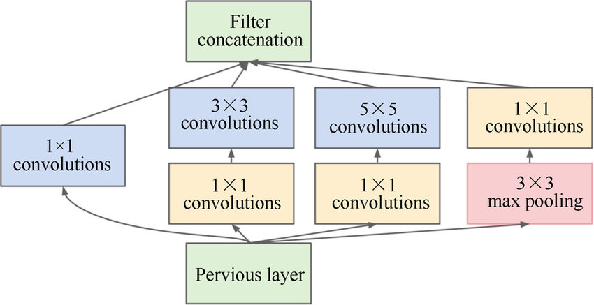
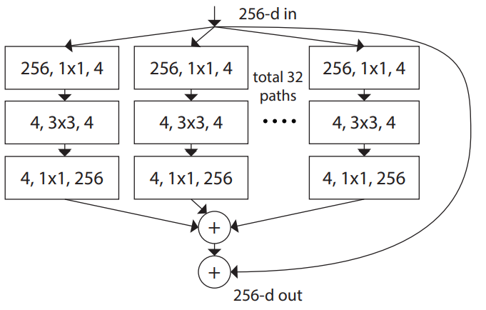
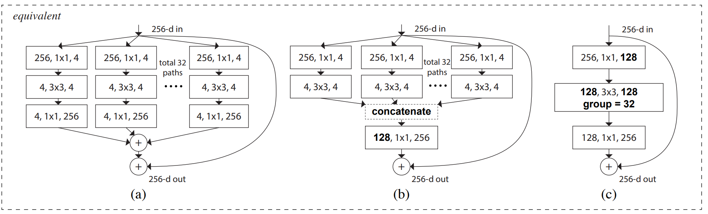
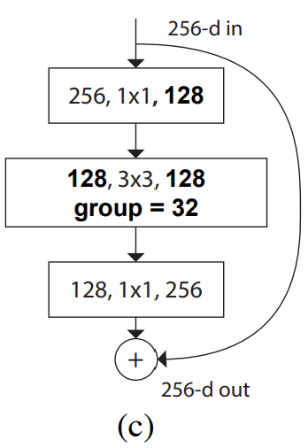
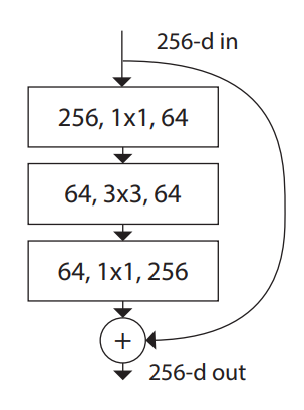
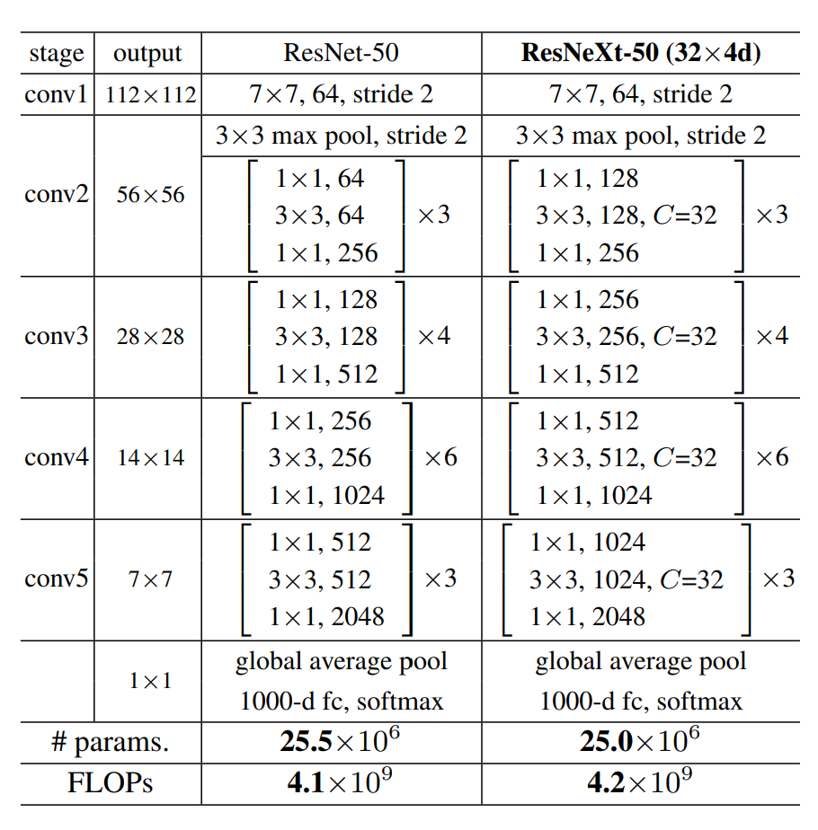
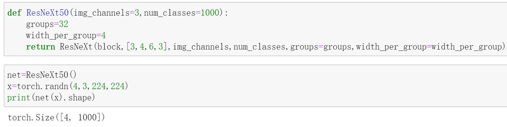

ResNeXt
在前面的文章中，我们已经介绍了ResNet以及Inception的原理及其PyTorch实现。而今天要介绍的ResNeXt，正是在ResNet的基础上，结合Inception得到的。
在Inception中，其多个分支的结构是不同的，就像这样：

ResNeXt的作者提议将每个分支的结构搞成一样的，以减少网络复杂性，便于扩展；再加上一个skip connection，就得到了ResNeXt block。
下面是论文中给出的一个ResNeXt block：

它总共有32个分支，每个分支的结构都是完全相同的，且输入与输出之间做了跳连(skip connection)。
其实，上面的这个结构还是可以简化的，作者在论文中指出，以下3种结构是等价的：

因此，为了方便，编码时我们就采用(c)结构。
现在把ResNeXt block的(c)结构单独拎出来：

再把ResNet block拿过来：

对比来看，两者在结构上的区别在于，前者的3x3卷积是分组卷积。在论文中，作者将分组数用Cardinality来表示，并且指出： increasing cardinality is more effective than going deeper or wider when we increase the capacity.
ResNet有许多版本，对应的ResNeXt也有许多不同版本。我们之前已经实现过ResNet-50，这里我们将实现ResNeXt-50。
ResNet50和ResNeXt-50的网络结构图如下：

其中的C指的是Cardinality，也就是分组数。
可以看到，除了上面所提到的分组卷积外，ResNeXt-50 block的第一个1x1卷积和3x3卷积的输出特征图个数是ResNet-50对应的二倍。
鉴于此，我们可以很轻松的通过修改ResNet-50的代码来实现ResNeXt-50。
PyTorch 实现 ResNeXt
在实现之前，还有一点需要说明：
在上面的网络结构图中，出现了32x4d，这里的32指的是分组数，4指的是每个组内的卷积核个数。这两个参数的不同，ResNeXt-50的性能也会有所不同，作者经过实现发现，使用32x4d的搭配能够取得较好的效果，所以在这里，比”我们要实现ResNeXt-50”更准确的说法是”实现ResNeXt-50(32x4d)”。
首先实现ResNeXt block，也就是网络结构图中conv2到conv5都遵循的block：
1 | class block(nn.Module): |
上面的代码是从我们之前发过的ResNet文章中复制并加以微小修改得到的。
具体地，添加了两个参数：groups，width_per_group。这两个参数就是上面提到的”分组数”和”每个组内的卷积核个数”。
width=int(out_channels(width_per_group/64))groups这句代码实现了将ResNet-50中第一个1x1卷积和3x3卷积的输出特征图个数增加一倍的操作，这样就得到了ResNeXt-50中相应的输出特征图个数。
当这两个参数采用默认值时，就是ResNet-50的block。
现在来实现完整的ResNeXt-50：
1 | class ResNeXt(nn.Module):#每个残差block重复次数：[3,4,6,3] |
这段代码同样是复制于ResNet-50，并做了一点修改。具体地，添加groups和width_per_group这两个参数，并在_make_layer方法中调用block类的地方传入这两个参数。
看，我们只是在ResNet-50的基础上做了一点点修改，就得到了ResNeXt-50。
如果你对上述代码中某些细节有困惑，请阅读我们之前推送的关于ResNet的文章。
最后，还是老规矩，来测试一下：

参考：


- 本文链接：http://yoursite.com/2021/06/04/%E7%BB%8F%E5%85%B8%E5%8D%B7%E7%A7%AF%E6%9E%B6%E6%9E%84-ResNeXt/
- 版权声明：本博客所有文章除特别声明外，均默认采用 许可协议。